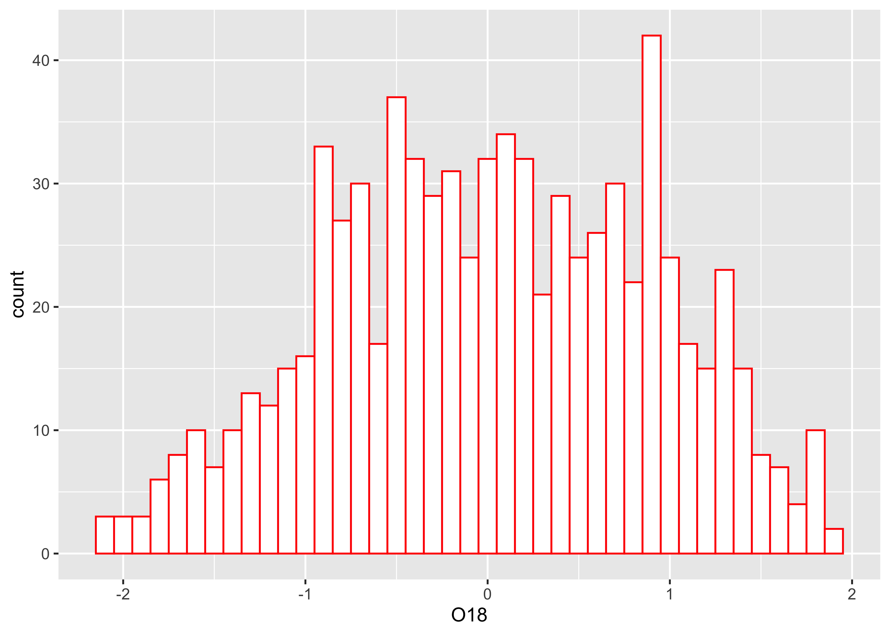
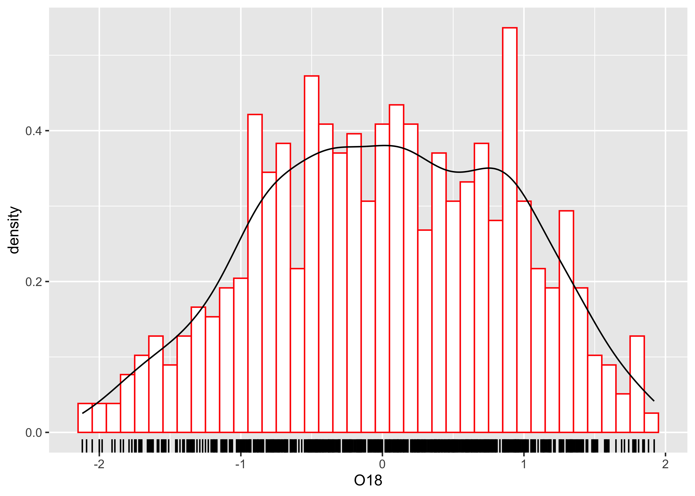
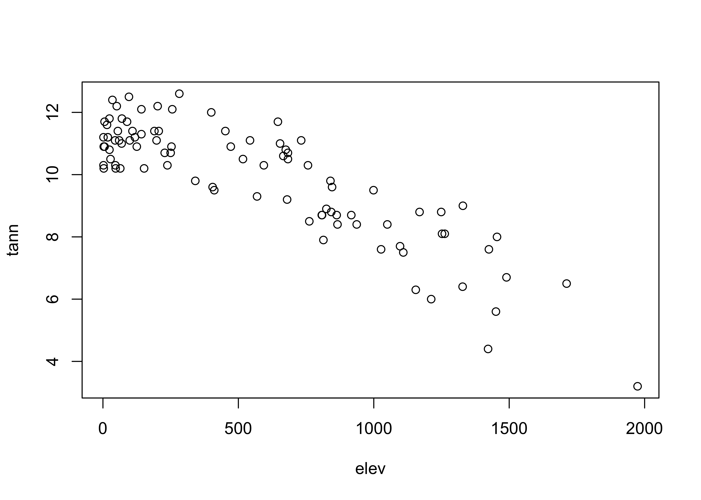
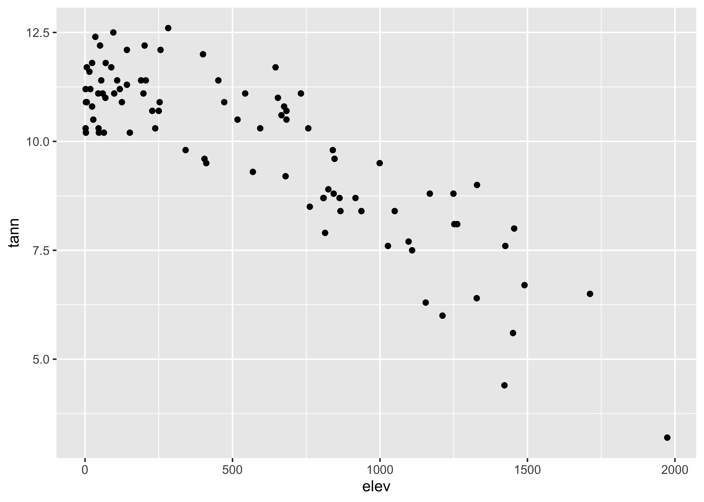
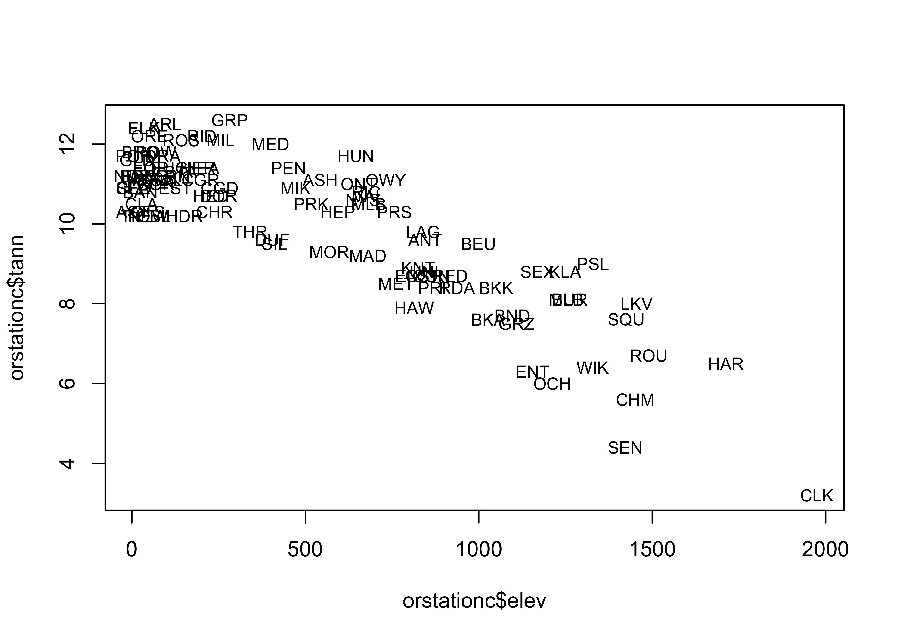
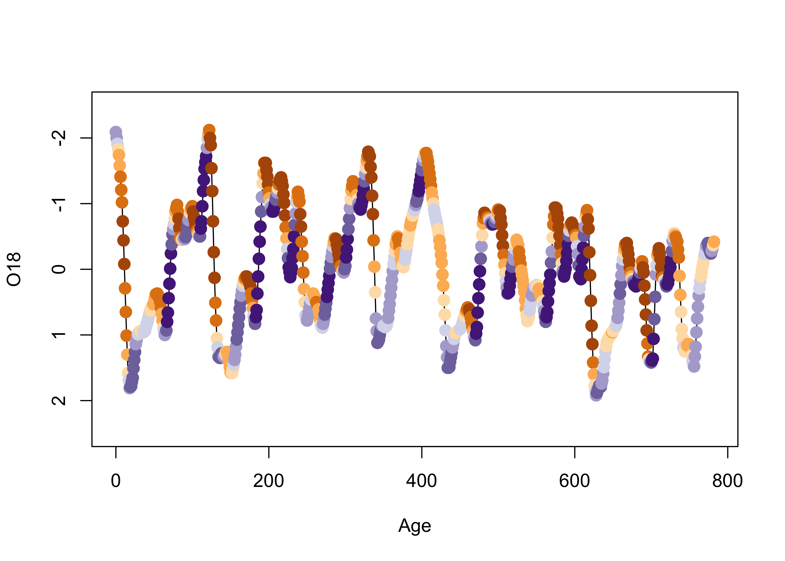
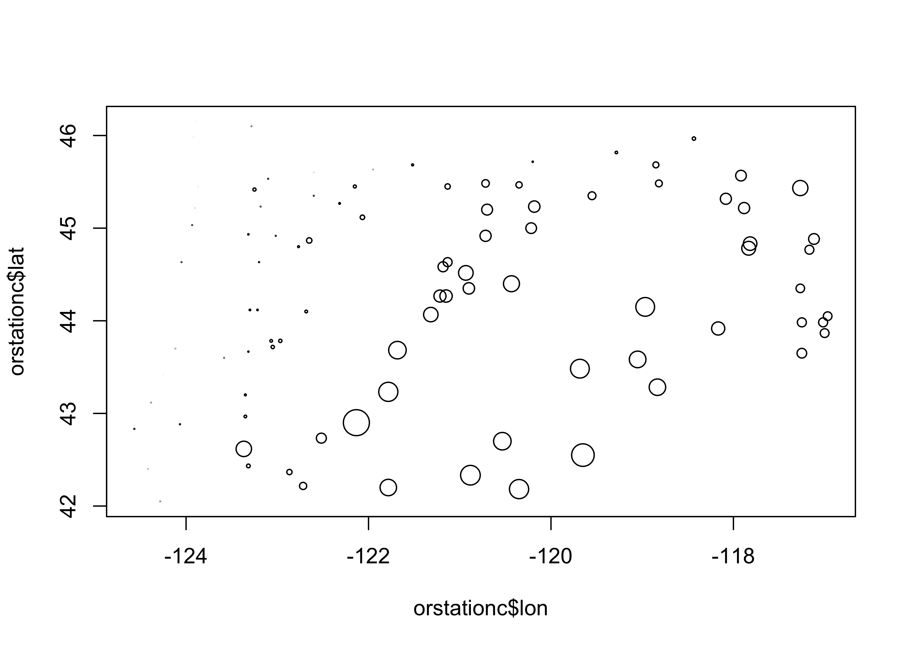
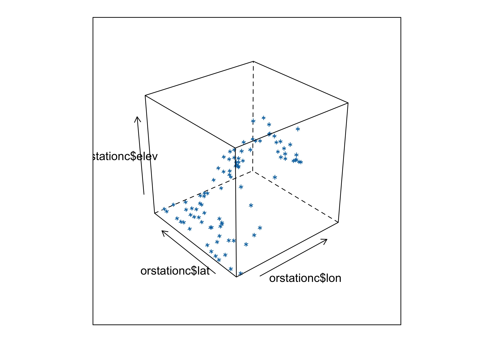
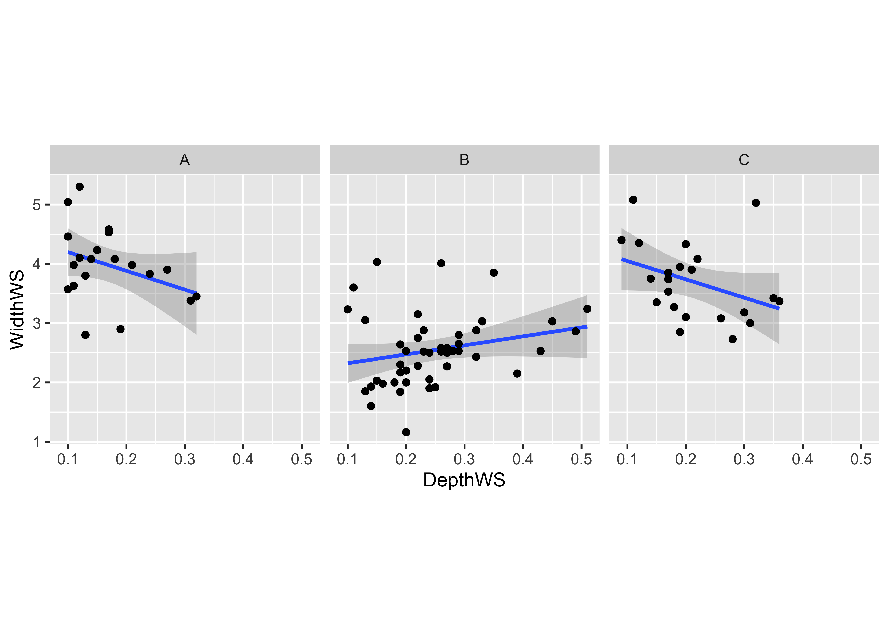
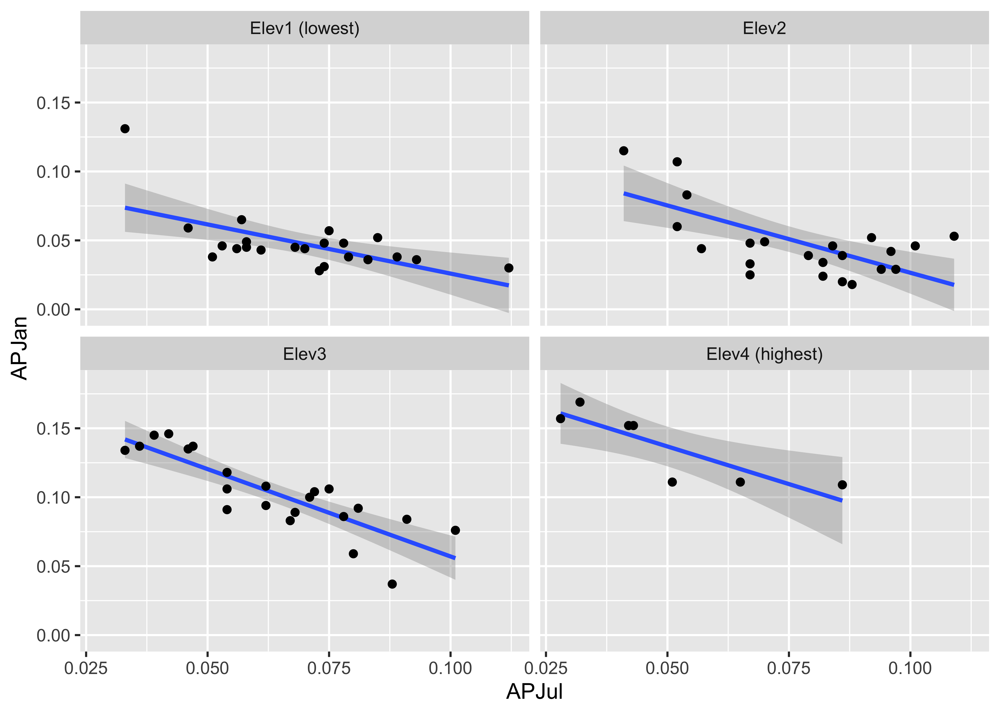

Plots (1)
NOTE: This page has been revised for Winter 2024, but may undergo further edits.
1 Introduction
Once data has been retrieved and read in, the first step in any
analysis is to plot or visualize the data: plot first, then model! The
prinicipal plotting and visualization tool for examining Earth-system
science data is, of course, the map, but there are a variety of other
kinds of plots that are useful including time-space maps, or Hovmöller
diagrams. This topic focuses on some of the basic plots for
characterizing data, and contrasts the quick (and dirty) base R plots
with the nicer versions of plots generated by the {ggplot2}
package. The original package was {ggplot}, and was
replaced by. {ggplot2} (although the main function
ggplot() remained the same). The current version of the
package (as of Jan 2024), is 3.4.4, but it’s still called
{ggplot2} (and the main function remains
ggplot()).
The package {ggplot2} by Hadley Wickham (and others)
provides an alternative approach to the “base” graphics in
R for constructing plots and maps, and was inspired by
Lee Wilkinson’s The Grammar of Graphics book (Springer, 2nd Ed.
2005). The basic premise of the Grammar of Graphics book, and
of the underlying design of the package, is that data graphics, like a
language, are built upon some basic components that are assembled or
layered on top of one another. In the case of English (e.g Garner, B.,
2016, The Chicago Guide to Grammar, Usage and Punctuation,
Univ. Chicago Press), there are eight “parts of speech” from which
sentences are assembled:
- Nouns (e.g. computer, classroom, data, …), including gerunds (e.g. readings)
- Pronouns (e.g. he, she, they, …)
- Adjectives (e.g. good, green, my, year-to-year, …, including articles, e.g. a, the)
- Verbs (e.g. analyze, write, discuss, computing, …)
- Adverbs (e.g. “-ly” words, very, loudly, bigly, near, far, …)
- Prepositions (e.g. on, in, to, …)
- Conjunctives (e.g. and, but, …)
- Interjections (e.g. damn)
(but as Garner notes, those categories “aren’t fully settled…” p. 18).
In the case of graphics (e.g. Wickham, H., 2016, ggplot2 – Elegant Graphics for Data Analysis, 2nd. Ed., Springer, available online from [http://library.uoregon.edu]) the components are:
- Data (e.g. in a dataframe)
- Coordinate Systems (the coordinate system of a plot)
- Geoms and their “aesthetic mappings” (the geometric objects like points, lines, polygons that represent the data)
These functions return Layers (made up of geometric elements) that build up the plot. In addition, plots are composed of
- Stats (or “statistical transformations”, i.e. curves)
- Scales (that map data into the “aesthetic space”, i.e. axes and legends)
- Facets (e.g subsets of data in individual plots)
- Legends and
- Themes (that control things like background colors, fonts, etc.)
In describing or characterizing the observations of an individual variable, there are three basic properties that are of interest:
- the location of observations (along the number line in general (but the geographical analogy is obvious), or how large or small the values of the individual observations are)
- the dispersion (sometimes called scale or spread) of the observations (how spread out they are along the number line, and again the geographical analogy is obvious)
- the distribution of the observations (a characterization of the frequency of occurrence of different values of the variable–do some values occurs more frequently than other values?)
Univariate plots provide one way to find out about those properties (and univariate descriptive statistics provide another).
2 Univariate and bivariate plots
There are two basic kinds of univariate, or one-variable-at-a-time plots,
- Enumerative plots, or plots that show every observation, and
- Summary plots, that generalize the data into a simplified representation.
2.1 Simple plots
Load the {ggplot2} package:
Also load some data to reproduce the examples here:
# load data from a saved .RData file
con <- url("https://pages.uoregon.edu/bartlein/RESS/RData/geog490.RData")
load(file=con) We’ll start with plots that are univariate (one variable) enumerative (all data points shown). (This page is largely derived from the GEOG 4/595 Geographic Data Analysis page [https://pjbartlein.github.io/GeogDataAnalysis/]. Enumerative plots, in which all observations are shown, have the advantage of not losing any specific information–the values of the individual observations can be retrieved from the plot. The disadvantage of such plots arises when there are a large number of observations–it may be difficult to get an overall view of the properties of a variable. Enumerative plots do a fairly good job of displaying the location, dispersion and distribution of a variable, but may not allow a clear comparison of variables, one to another.
Here is the R base graphics simple index plot, with
the value of the variable being plotted on the y axis, and the row
number in the data.frame on the x-axis (and note the use of the
attach() function to make the variables available using
just their names, as opposed ot “full names” (e.g. Length
as opposed to sumcr$Length):
Here’s the {ggplot2} version of the same plot. The code
is longer, but the additions allow for greater control, with the plot
being built up in layers. The easiest way to see how the plots work is
to comment out one or more lines (after the first) to see how the plots
work.
# ggplot version
ggplot() +
geom_point(data = sumcr, aes(x = 1:nrow(sumcr), y = Length)) +
geom_line(aes(x = 1:nrow(sumcr), y = Length)) +
labs(title="Summit Cr.", x = "Observation", y = "Length (m)") +
theme_bw() Another common univariate enumerative plot is the the strip plot / chart, plain and stacked:
The full {ggplot2} version almost reproduces the
base-graphics version. Note the use of the aes()
(aesthetic) function for describing the basic plot, which then has the
dotplot added using the geom_dotplot() function. The
theme_bw() term specifies the simple black-and-white theme.
As in the case of a histogram, the binwidth parameter
controls the granularity of the plot, and coord_fixed()
function changes the aspect ratio of the plot. (The white space can be
cropped when saving the image.)
# ggplot stripchart
ggplot(data=sumcr, aes(x = Length)) +
geom_dotplot(binwidth = 0.25, method = "histodot") +
coord_fixed(ratio = 4.0)Note that the whitespace could be removed after saving the figure.
2.2 Dotcharts/Dotplots
“Cleveland-style” dot charts are named after their inventor, William S. Cleveland, who wrote a couple of influential books on datea visualization, and participated in the development of S at Bell Labs. They were designed as an antidote to bar and pie charts, which are notorious for their poor performance in delivering information. Here’s a base-graphics Cleveland-style dotchart.
… and the {ggplot2} equivalent:
Note the subtle difference produced by the use of the
theme_bw() term. The plots are basically x-y plots
(specified by the aes(x=WidthWS, y=Location) arguments),
with the points themselves added by the geom_point()
term.
An alternative version of this plot, and the one most frequently
used, can be constructed by sorting the rows of the data table. Sorting
can be tricky–it is easy to completely destroy a data set by sorting one
variable and not the others. It is often better to leave the data
unsorted, and to use an auxiliary variable (in this case
index) to record the rank-order of the variable being
plotted (in this case WidthWS), and the explicit
vector-element indexing of R (square brackets) to arrange the data in
the right order:
Here’s the dotchart, with rows ordered by the WidthWS
values:
# sorted dotchart
index <- order(WidthWS)
dotchart(WidthWS[index], labels=as.character(Location[index]), cex=0.5)… and the {ggplot2} equivalent–note the use of the
theme() term to modify the label size:
2.3 Boxplots
Summary plots display an object or a graph that gives a more concise expression of the location, dispersion, and distribution of a variable than an enumerative plot, but this comes at the expense of some loss of information: In a summary plot, it is no longer possible to retrieve the individual data value, but this loss is usually matched by the gain in understanding that results from the efficient representation of the data. Summary plots generally prove to be much better than the enumerative plots in revealing the distribution of the data.
Boxplots are an example of a univariate and summary plot. Here is the standard boxplot:
… and the {ggplot2} version:
The actual data points can be added to the boxplot, by specifying an
additional graphical element using the geom_point()
function
# ggplot box and points
ggplot(sumcr, aes(x=HU, y=WidthWS)) +
geom_boxplot() +
geom_point(colour = "blue") Detach the sumcr dataframe.
2.4 Histograms and density plots
Histograms are a type of bar chart that displays the counts or relative frequencies of values falling in different class intervals or ranges. The overall impression one gets about the distribution of a variable depends somewhat on the way the histogram is constructed: fewer bars give a more generalized view, but may obscure details of the distribution (the existence of a bimodal distribution, for example), while more may not generalize enough.
Here’s the {ggplot2} version, with the biwidth specified
explicitly (e.g., 1.0)
ggplot(specmap, aes(x = O18)) +
geom_histogram(binwidth = 0.1, fill = "white", color = "red", boundary = 0.05)
The look of a histogram depends a lot on the choice of bin-widths, and the impression one may have about the distribution of the data is influenced by the “spikiness” of the data. An alternative is the density plot – a plot of the local relative frequency or density of points along the number line or x-axis of a plot. The local density is determined by summing the individual “kernel” densities for each point. Where points occur more frequently, this sum, and consequently the local density, will be greater. Density plots get around some of the problems that histograms have, but still require some choices to be made. Here’s a base-graphics density plot:
Note that in this example, an object O18.density is
created by the density() function, and then plotted using
the plot() function.
Here’s a version the {ggplot2} density plot:
A combined histogram, density and rug plot via the base graphics:
# histogram, density, rug
hist(specmap$O18, breaks=20, probability=TRUE)
lines(O18_density)
rug(specmap$O18)And here’s a ggplot version, with three distinct
layers:
# histogram, density, rug
ggplot(specmap, aes(x = O18)) +
geom_histogram(aes(y = ..density..), binwidth = 0.1, fill = "white", color = "red", boundary = 0.05) +
geom_line(stat = "density") +
geom_rug(data = specmap, aes(x = O18)) ## Warning: The dot-dot notation (`..density..`) was deprecated in ggplot2 3.4.0.
## ℹ Please use `after_stat(density)` instead.
## This warning is displayed once every 8 hours.
## Call `lifecycle::last_lifecycle_warnings()` to see where this warning was generated.
3 Bivariate plots
Bivariate descriptive displays or plots are designed to reveal the relationship between two variables. As was the case when examining single variables, there are several basic characteristics of the relationship between two variables that are of interest. These include:
- the form of the relationship
- the strength of the relationship, and
- the dependence of the relationship on external (to the two variables being examined) circumstances.
Bivariate plots provide the means for characterizing pair-wise relationships between variables. Some simple extensions to such plots, such as presenting multiple bivariate plots in a single diagram, or labeling the points in a plot, allow simultaneous relationships among a number of variables to be viewed.
3.1 Scatter diagrams
The scatter diagram is the workhourse diagram for looking at relationships between variables (which is why it is the default plot method in R). Also known as scatter plots or x-y plots, they are bivariate (two variables) and enumerative (every point shown). Traditionally the dependent or response variable is plotted on the vertical or Y-axis, while the “independent or predictor variable is plotted on the horizontal or X-axis. The convention can be imposed on plots in by listing the horizontal or X-axis variable first, and Y-axis variable second (i.e., an X-Y plots).
Here’s the base plot version of a scatter diagram:

… and here are two {ggplot2} scatter plots of annual
temperature and annual precipitation vs. elevation:


It might make sense to compare the plots side-by-side. That can be
done for the {ggplot2} versions of those plots cby
generating the plots, saving them as objects (plot1 and
plot2), and then using a function
grid.arrange() from the gridExtra package to
plot the two objects:
# side-by-side plots
library(gridExtra)
plot1 <- ggplot(orstationc, aes(x = elev, y = tann)) + geom_point()
plot2 <- ggplot(orstationc, aes(x = elev, y = pann)) + geom_point()
grid.arrange(plot1, plot2, ncol=2)Note that {ggplot2} allows one to transform the
coordinate system as well as the values of the individual variables.
Here a square-root scaling of the y-axis is done, to examine the
relationship between precipitation and elevation, when the precipitation
values have been transformed in an attempt to make the relationship more
linear. Note that the overall appearance of the plots is identical–it’s
the y-axes that differ.
# transformed y-axis
plot1 <- ggplot(orstationc, aes(x = elev, y = tann)) + geom_point()
plot2 <- ggplot(orstationc, aes(x = elev, y = pann)) + coord_trans(y="sqrt") + geom_point()
grid.arrange(plot1, plot2, ncol=2)Labeling of points using ggplot is possible, and again
{ggplot2} offers more fine control, such as some ability to
deal with text overlap.
Here is the base plotting version of a text-labelled scatter plot:
# text labels
plot(orstationc$tann ~ orstationc$elev, type="n")
text(orstationc$tann ~ orstationc$elev, labels=as.character(orstationc$station), cex = 0.8) # text
A ggplot version of the same ia shown below. The
check_overlap() function attempts to move the labels to
avoid overplotting. To see where the datapoints actualy lie, they are
added as dots.
# text labels
ggplot(orstationc, aes(x= elev, y = tann, label=as.character(station))) +
geom_text(check_overlap = TRUE, size = 3) +
geom_point(size = 0.5) +
theme_gray()Here’s another approach to point-labeling:
# text-label boxes
ggplot(orstationc, aes(x= elev, y = tann, label=as.character(station))) +
geom_label(size = 3) +
# geom_point(size = 1, color = "red") +
theme_gray()Note the difference between the plots–the first plots a simple text
string using geom_text() while the second plots a more
formal label using geom_label().
3.2 Summarizing scatter plots
Although the visual inspection of a scatter plot generally reveals the nature of the relationship between the pair of variables being plotted, sometimes this relationship may be obscured simply by the number of points on the plot. In such cases the relationship, if present, may be detected by a summarization method. Similarly, our tendency to seek order in a chaotic set of points may lead us to perceive a relationship where none is really there. Again, summarizing the scatter plot may be useful.
Scatter plot smoothing involves fitting a smoothed curve through the cloud of points to describe the general relationship between variables. This technique is very generalizable, and a variety of smoothers can be used. The most common is the “lowess” or “loess” smoother, which will be discussed in more detail later.
# use Oregon climate station annual temperature data
attach(ortann)
plot(elevation, tann)
lines(lowess(elevation,tann))The {ggplot2} version uses stat_smooth() to
get the lowess curve (and confidence band):
# ggplot scatter plot plus smooth
ggplot(data = ortann, aes(x = elevation, y = tann)) +
geom_point() +
stat_smooth(span = 0.9) +
theme_bw()## `geom_smooth()` using method = 'loess' and formula = 'y ~ x'4 Multivariate plots
Multivariate descriptive displays or plots are designed to reveal the relationship among several variables simulataneously.. As was the case when examining relationships among pairs of variables, there are several basic characteristics of the relationship among sets of variables that are of interest. These include:
- the forms of the relationships
- the strength of the relationships, and
- the dependence of the relationships on external (usually to the pairs of variables being examined) circumstances.
4.1 Labeled scatter plots
In addition to the simple catagorial (or factor) labelling of plots,
the {ggplot2} package supports more elaborate, or computed,
decoration or coloring of plots, in order to examine the role of
additional variables on bivariate relationships. Annotation of points
involves adding information to a plot for individual points, that
include such things as the observation number or other information, to
“explain” individual points that may be unusual, or to simply identify
the point for a key observation or set of observations.
Here’s the base R version of the specmap data. Recall that the relationship between ice volume and insolation anomalies (or differences from the present day, which are considered to be the pacemake of the ice ages) is weak when examined superficially.

## [1] -0.2415094As we saw earlier, on approach is to look at the time series plot of O18 values, and use insolation to colorize the individual points.
# points decorated by color
library(RColorBrewer)
library(classInt) # class-interval recoding library
# first block -- setup
plotvals <- Insol
nclr <- 8
plotclr <- brewer.pal(nclr,"PuOr")
plotclr <- plotclr[nclr:1] # reorder colors
class <- classIntervals(plotvals, nclr, style="quantile")
colcode <- findColours(class, plotclr)
# second block -- plot
plot(O18 ~ Age, ylim=c(2.5,-2.5), type="l")
points(O18 ~ Age, pch=16, col=colcode, cex=1.5)
Here’s a {ggplot2} version, where the colorization is
extended to the lines as well as the symbols.
# points decoreated by color
ggplot() +
geom_line(data = specmap, aes(x=Age, y=O18, color=Insol)) +
geom_point(data = specmap, aes(x=Age, y=O18, color=Insol), size = 3) +
scale_y_reverse() +
scale_colour_gradientn(colours=rev(brewer.pal(nclr,"PuOr")))As we saw earlier, positive insolation anomalies are associated with trends toward lower ice volume (negative O18 values, note the y-axis labelling), and negative anomalies with increasing ice volume.
Symbol color and shape can be used to encode the values of two additional variables, as demonstrated using the Summit Cr. data:
# points labeled by Reach and HU
attach(sumcr)
plot(WidthWS ~ CumLen, pch=as.integer(Reach), col=as.integer(HU))
legend(25, 2, c("Reach A", "Reach B", "Reach C"), pch=c(1,2,3), col=1)
legend(650, 2, c("Glide", "Pool", "Riffle"), pch=1, col=c(1,2,3))Here is the {ggplot2} version:
# ggplot2 version
ggplot(sumcr, aes(x=CumLen, y=WidthWS, shape=Reach, color=HU)) + geom_point(size = 3)Symbol size can be used to indicate the value of a third variable, forming a “bubble” or “balloon” plot, to indicate the value of station elevation on a simple longitude by latitude plot of the Oregon climate-station data:
# bubble plot
plot(orstationc$lon, orstationc$lat, type="n")
symbols(orstationc$lon, orstationc$lat, circles=orstationc$elev, inches=0.1, add=T)
Here’s the equivalent plot using {ggplot2}
4.2 3-D Scatter plots
3-D scatter plots (as distinct from scatter plot matrices involving three variables), illustrate the relationship among three variables by plotting them in a three-dimensional “workbox”. There are a number of basic enhancements of the basic 3-D scatter plot, such as the addition of drop lines, lines connecting points, symbol modification and so on.
A 3-D point-cloud plot displays the values of three variables at a
time by plotting them in a 3-D “workbox” where the value of one variable
determines the relative position of the symbol along the X-axis and the
value of a second variable determines the relative position of the
symbol along the Y-axis, and the value of the third variable is used to
determine the relative position along the Z-axis. This plot makes use of
the lattice package.

Notice that you can still see the outline of the state, because elevation is a fairly well behaved variable.
The scatterplot3d package (by Ligges and Mächler)
provides a way of constructing a 3-point cloud display with some nice
embellishments. The first part of the code, like in making maps, does
some setup like determining the number of colors to plot and getting
their definitions. The second block produces the plot.
# scatterplot3d
library(scatterplot3d)
library(RColorBrewer)
# get colors for labeling the points
plotvar <- orstationc$pann # pick a variable to plot
nclr <- 8 # number of colors
plotclr <- brewer.pal(nclr,"PuBu") # get the colors
colornum <- cut(rank(plotvar), nclr, labels=FALSE)
colcode <- plotclr[colornum] # assign color
# scatter plot
plot.angle <- 45
scatterplot3d(orstationc$lon, orstationc$lat, plotvar, type="h", angle=plot.angle, color=colcode, pch=20, cex.symbols=2,
col.axis="gray", col.grid="gray")The z-variable, in this case, annual precipitation, is plotted as a dot, and for interpretability a drop line is plotted below the dot. This simple addition facilitates finding the location of each point (where it hits the x-y, or latitude-longitude plane), as well as the value of annual precipitation.
Maps can be added to the 3-D scatter plot to improve interpretab:
library(maps)
# get points that define Oregon county outlines
# oregon county outlines from {maps} package
or_map <- map("county", "oregon", xlim=c(-125,-114), ylim=c(42,47), plot=FALSE)
# get colors for labeling the points
plotvar <- orstationc$pann # pick a variable to plot
nclr <- 8 # number of colors
plotclr <- brewer.pal(nclr,"PuBu") # get the colors
colornum <- cut(rank(plotvar), nclr, labels=FALSE)
colcode <- plotclr[colornum] # assign color
# scatterplot and map
plot.angle <- 135
s3d <- scatterplot3d(orstationc$lon, orstationc$lat, plotvar, type="h", angle=plot.angle, color=colcode,
pch=20, cex.symbols=2, col.axis="gray", col.grid="gray")
s3d$points3d(or_map$x,or_map$y,rep(0,length(or_map$x)), type="l")The map() function generates the outlines of a map of
Oregon counties, and stores them in or.map, then the colors
are figured out, and finally a 3-D scatter plot is made (using the
scatterplot3d() function, and finally a 3-D scatter plot is
made (using the scatterplot3d() function, and the points and droplines
are added.
5 Trellis/Lattice graphics
Many data sets include a mixture of both “continuous” (ordinal-, interval- or ratio-scale variables) and “discrete” (nominal-scale variables). Often, the issue might arise of how a particular relationship between variables might differ among groups. Information of that nature can be gained using conditioning plots (or coplots). Such plots are part of a general scheme of visual data analysis, known as Trellis Graphics that has been created by the developers of the S language. Trellis Graphics are implemented in R using the package Lattice.
5.1 Coplots (conditioning scatter plots)
Conditioning scatter plots involves creating a multipanel display, where each panel contains a subset of the data. This subset can be either a) those observations that fall in a particular group, or b) they may represent a the values that fall within a particular range of the values of a variable. The idea is that the individual panels should illustrate the relationship between a pair of variables, over part of the range of the two marginal “conditioning” variables (i.e. the relationship “conditional on one marginal variable lying in one particular interval, and the other lying in a different interval.”)
Here is a coplot that describes the relationship between water-surface width and depth, as it varies among reaches along Summit Cr.
# coplot by Reach
attach(sumcr)
coplot(WidthWS ~ DepthWS | Reach, pch=14+as.integer(Reach), cex=1.5,
number=3, columns=3, overlap=0,
panel=function(x,y,...) {
panel.smooth(x,y,span=.8,iter=5,...)
abline(lm(y ~ x), col="blue")
} )And here’s a {ggplot2} version:
# ggplot coplot
ggplot(sumcr, aes(x=DepthWS, y=WidthWS)) +
stat_smooth(method = "lm") +
geom_point() +
facet_wrap(~ Reach) +
theme(aspect.ratio = 1)## `geom_smooth()` using formula = 'y ~ x'
6 More Lattice Plots
“Trellis” plots are the R version of Lattice plots that were originally implemented in the S language at Bell Labs. The aim of these plots is to extend the usual kind of univariate and bivariate plots, like histograms or scatter plots, to situations where some external variables, possibly categorical or “factor” variables, may influence the distribution of the data or form of a relationship. They do this by generating a trellis or lattice of plots that consist of an array of simple plots, arranged according to the values of some “conditioning” variables.
6.1 Multipanel plots
The following plots explore the seasonality of precipitation in the
Yellowstone region. This first plot uses glyphs to show the values of
twelve monthly precipitation variables as “spokes” of a wheel, where
each variable is plotted relative to its overall range. The first block
of code below sets things up, and the stars() function does
the plotting.
## Linking to GEOS 3.11.0, GDAL 3.5.3, PROJ 9.1.0; sf_use_s2() is TRUEattach(yellpratio)
# simple map
# read and plot shapefiles
ynp_state_sf <- st_read("/Users/bartlein/Documents/geog495/data/shp/ynpstate.shp")## Reading layer `ynpstate' from data source `/Users/bartlein/Documents/geog495/data/shp/ynpstate.shp' using driver `ESRI Shapefile'
## Simple feature collection with 3 features and 1 field
## Geometry type: LINESTRING
## Dimension: XY
## Bounding box: xmin: -112.2967 ymin: 42.69208 xmax: -107.7095 ymax: 46.22544
## Geodetic CRS: WGS 84plot(st_geometry(ynp_state_sf))
ynprivers_sf <- st_read("/Users/bartlein/Documents/geog495/data/shp/ynprivers.shp")## Reading layer `ynprivers' from data source `/Users/bartlein/Documents/geog495/data/shp/ynprivers.shp' using driver `ESRI Shapefile'
## Simple feature collection with 4 features and 1 field
## Geometry type: LINESTRING
## Dimension: XY
## Bounding box: xmin: -112.2967 ymin: 42.69208 xmax: -107.7095 ymax: 46.22544
## Geodetic CRS: WGS 84plot(st_geometry(ynprivers_sf), add = TRUE)
ynplk_sf <- st_read("/Users/bartlein/Documents/geog495/data/shp/ynplk.shp")## Reading layer `ynplk' from data source `/Users/bartlein/Documents/geog495/data/shp/ynplk.shp' using driver `ESRI Shapefile'
## Simple feature collection with 1 feature and 1 field
## Geometry type: LINESTRING
## Dimension: XY
## Bounding box: xmin: -110.566 ymin: 44.29883 xmax: -110.1902 ymax: 44.56021
## Geodetic CRS: WGS 84plot(st_geometry(ynplk_sf), add = TRUE)
points(Lon, Lat, pch=3, cex=0.6)
# stars plot for precipitation ratios
col.red <- rep("red",length(orstationc[,1]))
stars(yellpratio[,4:15], locations=as.matrix(cbind(Lon, Lat)),
col.stars=col.red, len=0.2, lwd=1, key.loc=c(-111.5,42.5), labels=NULL, add=T)Here the stars wind up looking more like fans. The legend indicates that stations with fans that open out to the right are stations with winter precipitation maxima (like in the southwestern portion of the region) while those that open toward the left have summer precipitation maxima (like in the southeastern portion of the region).
The next examples show a couple of conditioning plots (coplots), that illustrate the relationship between January and July precipitation, as varies (is conditioned on) with elevation. The first block of code does some set up.
# create some conditioning variables
Elevation <- equal.count(Elev,4,.25)
Latitude <- equal.count(Lat,2,.25)
Longitude <- equal.count(Lon,2,.25)
# January vs July Precipitation Ratios by Elevation
plot2 <- xyplot(APJan ~ APJul | Elevation,
layout = c(2, 2),
panel = function(x, y) {
panel.grid(v=2)
panel.xyplot(x, y)
panel.loess(x, y, span = 1.0, degree = 1, family="symmetric")
panel.abline(lm(y~x))
},
xlab = "APJul",
ylab = "APJan")
print(plot2, position=c(0,.375,1,1), more=T)
print(plot(Elevation), position=c(.1,0.0,.9,.4))The plot shows that the relationship between January and July precipitation indeed varies with elevation. At low elevations, there is proportionally lower January precipitation for the same July values (lower two panels on the lattice plot), but at higher elevations, there is proportionally more (top two panels). This relationship points to some orographic (i.e. related to the elevation of the mountains) amplification of the winter precipitation.
Here’s a {ggplot2} version:
# create an elevation zones factor
yellpratio$Elev_zones <- cut(Elevation, 4, labels=c("Elev1 (lowest)", "Elev2", "Elev3", "Elev4 (highest)"))
ggplot(yellpratio, aes(x=APJul, y=APJan)) +
stat_smooth(method = "lm") +
geom_point() +
facet_wrap( ~ Elev_zones)## `geom_smooth()` using formula = 'y ~ x'
The next plot shows the variation of the relationship between January and July precipitation as it varies spatially.
# January vs July Precipitation Ratios by Latitude and Longitude
plot3 <- xyplot(APJan ~ APJul | Latitude*Longitude,
layout = c(2, 2),
panel = function(x, y) {
panel.grid(v=2)
panel.xyplot(x, y)
panel.loess(x, y, span = .8, degree = 1, family="gaussian")
panel.abline(lm(y~x))
},
xlab = "APJul",
ylab = "APJan")
print(plot3)Notice that the steepest curve lies in the panel representing the southwestern part of the region (low latitude and low longitude, i.e. the bottom left panel), which suggests that winter (January) precipitation is relatively more import there, which is also apparent on the stars plot above.
Here’s the {ggplot2} version:
# create conditioning variables
Loc_factor <- rep(0, length(yellpratio$Lat))
Loc_factor[(yellpratio$Lat >= median(yellpratio$Lat) & yellpratio$Lon < median(yellpratio$Lon))] <- 1
Loc_factor[(yellpratio$Lat >= median(yellpratio$Lat) & yellpratio$Lon >= median(yellpratio$Lon))] <- 2
Loc_factor[(yellpratio$Lat < median(yellpratio$Lat) & yellpratio$Lon < median(yellpratio$Lon))] <- 3
Loc_factor[(yellpratio$Lat < median(yellpratio$Lat) & yellpratio$Lon >= median(yellpratio$Lon))] <- 4
# convert to factor, and add level lables
yellpratio$Loc_factor <- as.factor(Loc_factor)
levels(yellpratio$Loc_factor) = c("Low Lon/High Lat", "High Lon/High Lat", "Low Lon/Low Lat", "High Lon/Low Lat")
ggplot(yellpratio, aes(x=APJul, y=APJan)) +
stat_smooth(method = "loess", span = 0.9, col="red") +
stat_smooth(method = "lm") +
geom_point() +
facet_wrap(~Loc_factor)## `geom_smooth()` using formula = 'y ~ x'
## `geom_smooth()` using formula = 'y ~ x'